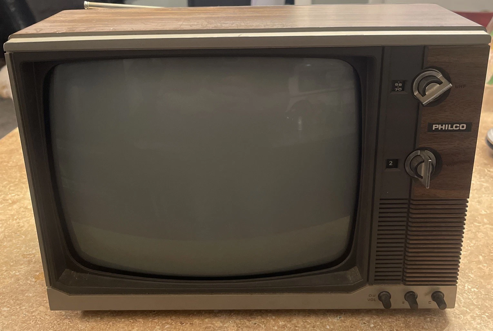
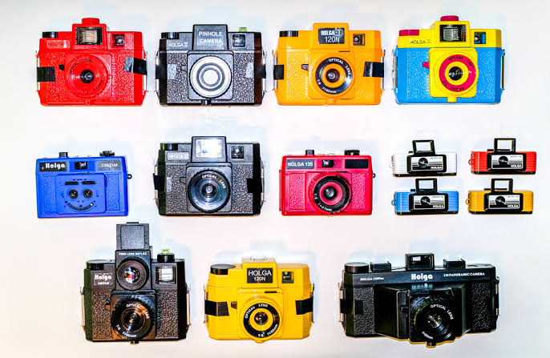

Welcome to Slide Deck Social! This is a presentation improv party game meant to be played with at least 3 people. Players get to submit their own photos and topics for people to present on.
Get ready to think fast, talk confidently, and have a great time with your friends. Here’s how it works:
One person will host the game on their device. We recommend a computer hooked up to a TV with HDMI or casting, or a large monitor so that everyone can see the host screen. The host clicks “Start a Game” to generate a 4 letter code.

Then, from a mobile device, everyone who wants to join the game then either clicks “Join a Game”, or goes to slidedecksocial.com/join. From there, each player enters their code, comes up with a username, and then waits for the host to start the game. Currently, the maximum number of players that can join a game is 8.
Once the host starts the game, everyone will upload six photos from their camera roll, and come up with 2 topics, which will be used to populate the slides that people present off of. Get creative!

After everyone has uploaded their photos and written their topics, the host can start presentations! Each person in the game will take a turn presenting, as well as being a “Slidemaster” who assists a presenter. Everyone else will be a member of a very polite audience.
Here’s what you will do in each role:
Presenter: It’s your turn to present! If you please, step to the front of the room, and make your case as best as you can. The topic you present on will be randomly selected by the game. The slidemaster will be queueing up photos and phrases on the slides for you, so be prepared to think fast and roll with the punches! Once you are done presenting, everyone in the audience will give you a rating out of 10, and who knows, they might leave you some comments as well. The sum of everyone’s ratings of you will be your final score in the game.
Slidemaster: The presenter needs you to choose slides that might help…or hurt their case! The topic will be randomly chosen from the pool of player submissions, but it’s up to you to queue up photos and phrases for the presenter as they speak. It’s also up to you to change the slides. You can make them talk for a while, or cut them off when they least expect it, it’s up to you! At the end of the presentation, you will also rate the presenter on how well they did.
Audience: Sit tight, listen, and maybe heckle if you please! Help the presenter give their best talk by being a great audience member. After each presenter is done, give them a ranking out of 10, and leave a comment if you have something to say. At the end of the game, each presenter is scored by adding up all of the rankings other players gave them.
And that’s it! We hope you have a great time playing Slide Deck Social!